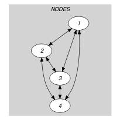
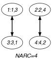

{kind=link}
5.331. symmetric_alldifferent
| DESCRIPTION | LINKS | GRAPH |
- Origin
- Constraint
- Synonyms
, , , , , , .
- Argument
- Restrictions
- Purpose
All variables associated with the attribute of the collection should be pairwise distinct. In addition enforce the following condition: if variable takes value then variable takes value . This can be interpreted as a graph-covering problem where one has to cover a digraph with circuits of length two in such a way that each vertex of belongs to one single circuit.
- Example
-
The constraint holds since:
,
.
- Symmetry
Items of are permutable.
- Usage
As it was reported in [Regin99], this constraint is useful to express matches between persons. The constraint also appears implicitly in the cycle cover problem and corresponds to the four conditions given in section 1 Modeling the Cycle Cover Problem of [PesantSoriano98].
- Remark
This constraint is referenced under the name in [HenzMullerThiel02] as well as in [Trick02]. From a modelling point of view this constraint can be expressed with the constraint [BeldiceanuContejean94] where one imposes the additional condition that each cycle has only two nodes.
- Algorithm
A filtering algorithm for the constraint was proposed by J.-C. Régin in [Regin99]. It achieves arc-consistency and its running time is dominated by the complexity of finding all edges that do not belong to any maximum cardinality matching in an undirected -vertex, -edge graph, i.e., .
- Reformulation
The constraint can be expressed in term of a conjunction of reified constraints of the form . The constraint can also be reformulated as an constraint as shown below:
- See also
common keyword: , , (permutation).
related: .
- Keywords
application area: sport timetabling.
characteristic of a constraint: all different, disequality.
combinatorial object: permutation, matching.
constraint type: graph constraint, timetabling constraint, graph partitioning constraint.
- Arc input(s)
- Arc generator
-
- Arc arity
- Arc constraint(s)
-
- Graph property(ies)
-
- Graph model
In order to express the binary constraint that links two vertices one has to make explicit the identifier of the vertices.
Parts (A) and (B) of Figure 5.331.1 respectively show the initial and final graph associated with the Example slot. Since we use the graph property, the arcs of the final graph are stressed in bold.
Figure 5.331.1. Initial and final graph of the constraint
  (a) (b) - Signature
Since all the attributes of the collection are distinct, and because of the first condition of the arc constraint, each vertex of the final graph has at most one successor. Therefore the maximum number of arcs of the final graph is equal to the maximum number of vertices of the final graph. So we can rewrite to and simplify to .